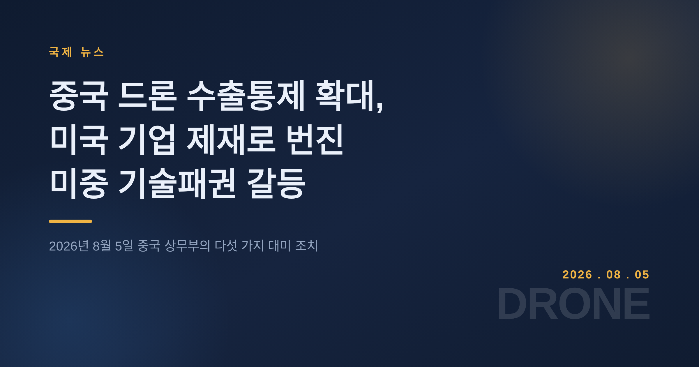
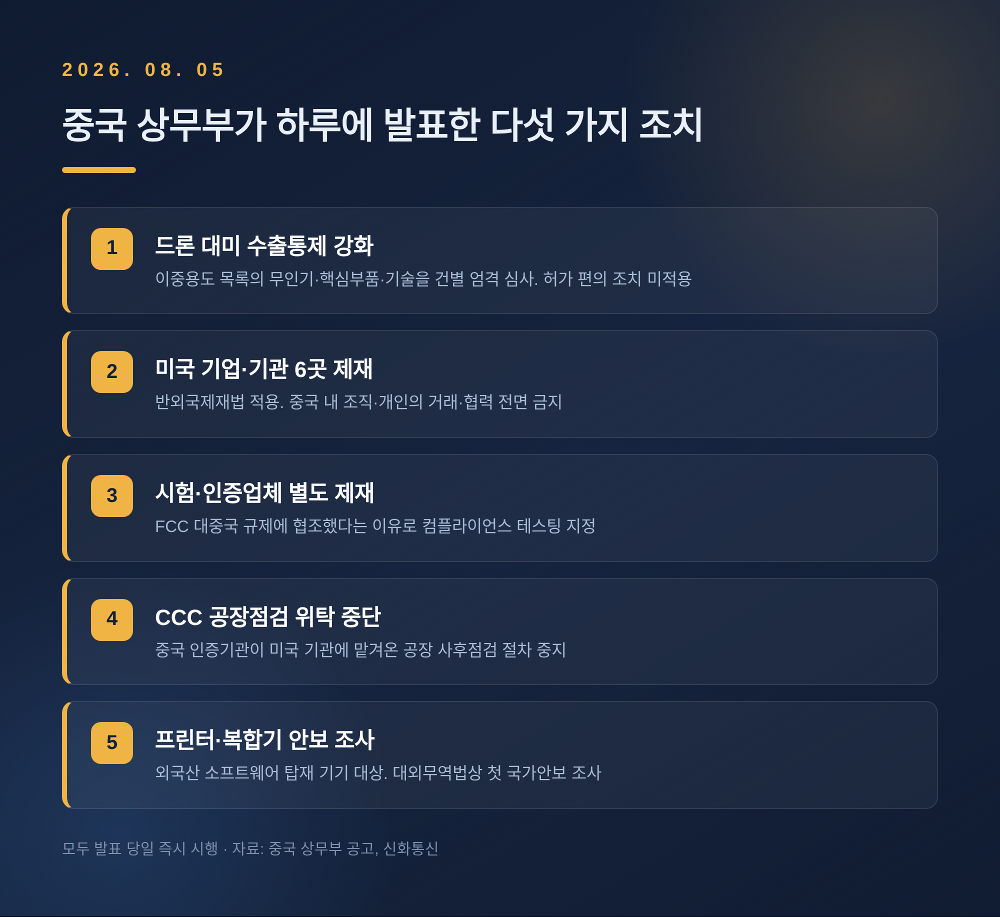
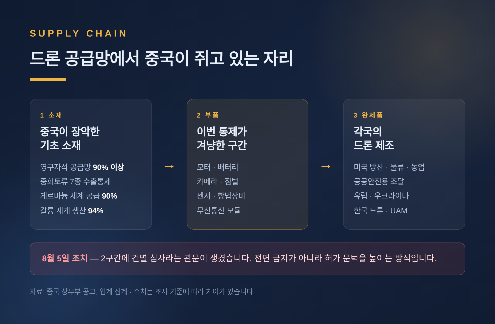
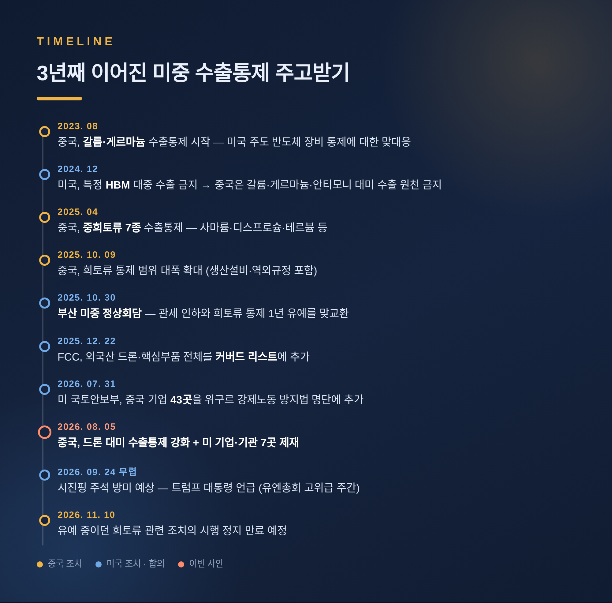
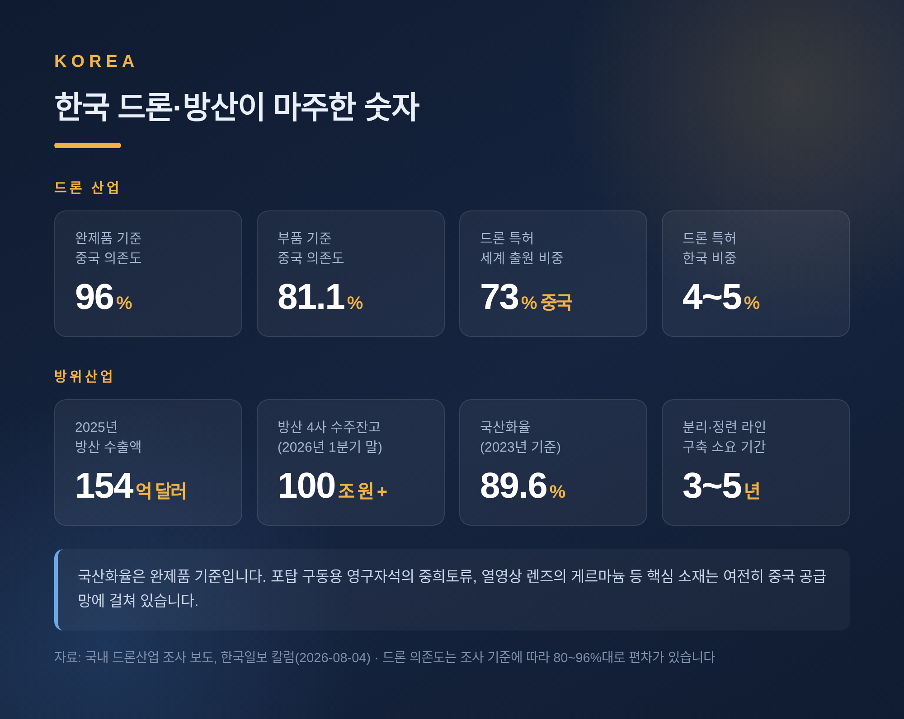
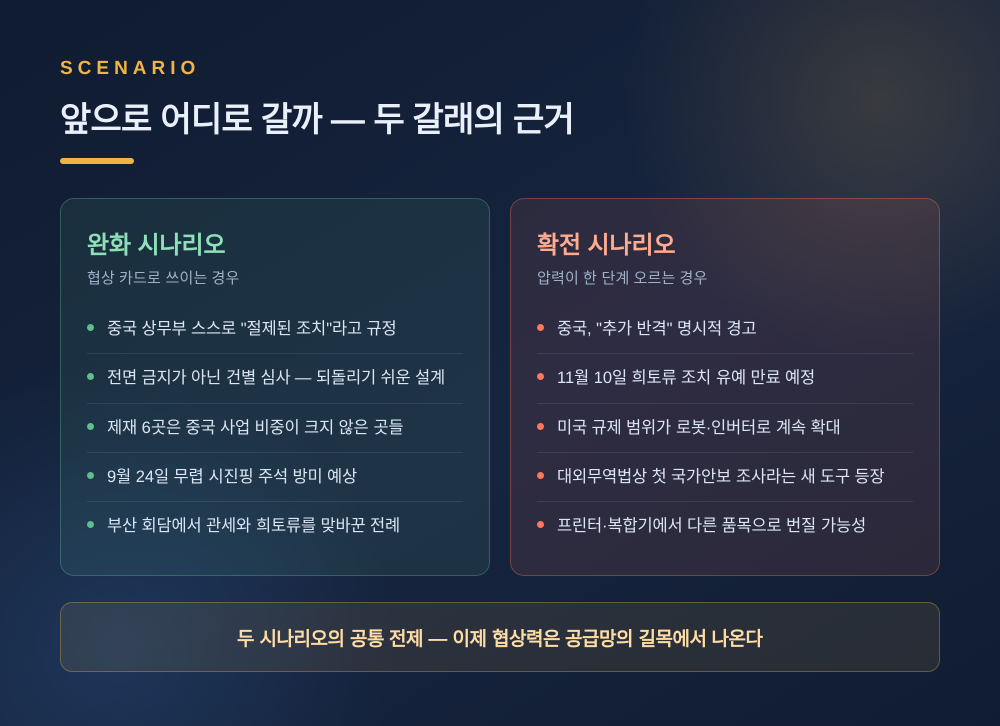

세 줄 요약
1. 중국 상무부가 2026년 8월 5일 드론과 핵심 부품의 대미 수출을 건별 심사로 전환하고, 미국 기업·기관 6곳을 반외국제재법 명단에 올렸습니다.
2. 직전에 미국이 외국산 드론 전체를 FCC 커버드 리스트에 올리고 중국 기업 43곳을 강제노동 명단에 추가한 데 대한 맞대응입니다.
3. 전면 금지가 아닌 '심사 강화'라는 점에서, 다음 달 정상회담을 앞둔 협상 카드의 성격이 강합니다.
이번 글에서는 2026년 8월 5일 중국이 발표한 대미 조치를 정리해 보겠습니다.
드론이라는 낯익은 물건이 어쩌다 미중 갈등의 한복판에 서게 됐는지, 그리고 이 일이 한국과 어떻게 이어지는지를 함께 살펴보겠습니다.

중국 상무부는 8월 5일 대미 조치를 한꺼번에 발표했습니다. 모두 발표 당일 즉시 시행됐습니다.
첫째, 드론 수출통제 강화입니다. 2026년 제34호 공고를 통해 '이중용도 품목 수출통제 목록'에 이미 올라 있는 무인기와 핵심 부품, 관련 기술을 미국으로 수출할 때 건별로 엄격히 심사한다고 밝혔습니다. 기존에 적용되던 허가 편의 조치는 적용하지 않습니다.
둘째, 반외국제재법에 따른 미국 기업·기관 6곳 제재입니다. 어플라이드 DNA 사이언스, 스트레이텀 리저버, 알타나 테크놀로지, 베리테그룹, 그리고 민간단체인 책임기업연합(RBA)과 휴먼라이츠인차이나(HRIC)가 대상입니다. 앞으로 중국 내 조직과 개인은 이들과 거래하거나 협력할 수 없습니다. 중국은 이들이 미국 정부의 신장위구르자치구 관련 제재를 지원했다고 주장했습니다.
셋째, 미국 시험·인증업체 컴플라이언스 테스팅을 별도 제재 명단에 올렸습니다. 미 연방통신위원회(FCC)의 대중국 규제에 협조했다는 이유입니다. 앞의 6곳과 합쳐 7곳으로 세는 보도가 나온 배경입니다.
넷째, 중국강제인증(CCC) 지정 기관이 미국 인증기관에 위탁해 온 공장 사후점검 절차를 중단했습니다.
다섯째, 외국산 소프트웨어를 탑재한 수입 프린터·복합기에 대해 최장 1년간 국가안보 조사에 들어갔습니다. 중국이 대외무역법에 근거해 국가안보 조사를 개시한 것은 이번이 처음입니다.

이 조치의 성격을 정확히 읽는 것이 중요합니다.
중국은 드론 수출을 막지 않았습니다. 허가 문턱을 높였을 뿐입니다.
신화통신이 전한 상무부 설명도 "건별 엄격 심사, 허가 편의 조치 미적용"까지입니다.
차이는 큽니다. 금지는 되돌리려면 정책을 뒤집어야 하지만, 심사는 허가를 내주는 속도만 바꾸면 됩니다. 언제든 조일 수도, 풀 수도 있는 손잡이인 셈입니다.
업계에서 예상하는 파급도 이 결에 맞습니다. 당장의 품귀보다는 납기 지연과 서류 부담 증가가 먼저 온다는 것입니다. 이미 운용 중인 드론에는 영향이 없고, 충격은 제조 단계에 몰립니다. 소싱 선택지가 좁은 중소 제조사가 더 크게 흔들릴 것으로 전망됩니다.
중국이 이 카드를 고른 이유는 숫자를 보면 드러납니다.
DJI의 점유율은 집계 기준에 따라 편차가 큽니다. 세계 소비자·상업용 드론 시장 70% 이상, 미국 소비자용 시장 약 80%, 미 상무부 자체 조사 기준 미국 상업용 부문 약 70%라는 수치가 인용됩니다. 시장 범위를 넓게 잡은 조사에서는 40%대로 낮아지기도 합니다. 다만 어느 집계에서도 압도적 1위라는 사실은 흔들리지 않습니다.
더 깊은 곳은 부품입니다. 미국 제조사들은 공급망 다변화를 해왔지만 모터, 배터리, 무선통신 모듈, 센서, 카메라, 항법장비를 여전히 중국에서 받습니다. 특히 중국은 영구자석 공급망의 90% 이상을 쥐고 있습니다. 영구자석은 모든 브러시리스 드론 모터의 바닥에 깔린 부품입니다.
완제품 시장을 잃어도 부품 공급망은 남습니다. 이번 조치가 겨냥한 지점이 바로 거기입니다.

균형을 위해 미국이 먼저 무엇을 했는지도 짚겠습니다.
2025년 12월 22일, FCC는 전날 발령된 국가안보 판단에 근거해 외국에서 생산된 모든 무인항공기시스템과 핵심 부품을 '커버드 리스트'에 올렸습니다. DJI와 오텔 로보틱스가 포함됐습니다. 이 목록에 오르면 신규 기기는 FCC 인증을 받을 수 없고, 미국 내 수입과 판매가 막힙니다. 이미 팔린 기기에는 소급되지 않습니다.
FCC가 든 근거는 외국산 드론과 핵심 부품이 미 국가안보에 "용납할 수 없는 위험"을 준다는 범정부 판단이었습니다. 통신 서비스에서 시작해 시험기관, 드론, 공유기, 해저케이블로 넓어진 규제 범위는 최근 중국산 첨단 로봇과 전력 인버터까지 닿았습니다.
이어 7월 31일에는 미 국토안보부가 강제노동 연루 의혹을 이유로 중국 기업 43곳을 위구르 강제노동 방지법 명단에 추가했습니다. 명단에 오른 기업이 만든 제품은 강제노동으로 만들어진 것으로 추정되고, 수입업자가 이를 반증하지 못하면 미국에 들어올 수 없습니다.
미국 측 논리는 일관됩니다. 통신 기능을 가진 기기와 강제노동 의혹이 있는 공급망은 안보와 인권의 문제이며, 경제적 비용을 감수하더라도 차단해야 한다는 것입니다. 다만 이 판단의 근거를 놓고는 미국 안에서도 이견이 있습니다. 오텔 로보틱스는 2026년 5월 FCC에 낸 답변에서 자사에 대한 조치가 "비공개 증거와 DJI를 겨냥한 주장을 빌려온 것"이라며 반박했습니다.
중국의 설명도 나름의 일관성을 갖습니다.
상무부는 이번 조치의 목적을 "국가 안보와 이익 수호, 비확산 등 국제적 의무 이행"이라고 밝혔습니다. 제재 대상 선정 기준도 미국의 신장 관련 제재에 협조했거나 FCC 규제 절차에 관여한 주체입니다. 자국을 겨냥한 규제의 '집행 고리'를 끊겠다는 취지로 읽힙니다.
주목할 점은 수위 조절입니다. 상무부 대변인은 "중국의 반격 조치는 전체적으로 절제된 것"이라며 "중미 경제·무역 관계에 어렵게 온 안정을 소중히 여긴다"고 했습니다. 그러면서도 "미국이 새로운 대중국 제한 조치를 고집한다면 추가로 반격할 것"이라는 경고를 함께 남겼습니다.
대화의 문을 열어두되 물러서지는 않겠다는 이중 메시지입니다.
이번 조치는 갑자기 나온 것이 아닙니다. 흐름을 놓고 보면 자리가 분명해집니다.
2023년 8월 중국은 갈륨과 게르마늄 수출통제를 시작했습니다. 중국은 세계 갈륨 생산의 94%, 게르마늄의 90%를 공급합니다. 2024년 12월 미국이 특정 고대역폭메모리(HBM)의 대중 수출을 금지하자, 중국은 갈륨·게르마늄·안티모니의 대미 수출을 원천 금지했습니다.
2025년 4월에는 사마륨·디스프로슘·테르븀 등 중희토류 7종에 수출통제를 걸었습니다. 그해 10월 9일에는 통제 범위를 크게 넓혔습니다.
전환점은 2025년 10월 30일 부산 정상회담이었습니다. 미국은 펜타닐 관련 관세를 20%에서 10%로 내렸고, 중국은 10월 조치의 시행을 1년 유예했습니다. 관세와 희토류를 맞바꾼 거래였습니다.
2026년 5월에는 트럼프 대통령이 9년 만에 베이징을 찾아 정상회담을 했습니다. 그리고 석 달 뒤 이번 조치가 나왔습니다.
예전에는 관세가 무기였습니다. 지금은 서로가 쥔 공급망의 길목이 무기입니다. 미국이 반도체와 AI 칩을 쥐면, 중국은 희토류와 영구자석과 드론 부품을 쥡니다.

탈중국이 실제로 가능한지 궁금하다면, 참고할 사례가 하나 있습니다.
2023년 우크라이나는 DJI 마빅 쿼드콥터 세계 생산량의 60%를 사들였습니다. 그러다 2025년 5월 젤렌스키 대통령은 중국이 우크라이나와 유럽에 마빅 공급을 끊었다고 밝혔습니다.
이후 자국 생산이 폭발적으로 늘었습니다. FPV 드론 생산량은 2022년 3,000~5,000대에서 2024년 220만 대, 2025년 450만 대로 뛰었습니다. 2026년 3월 뉴욕타임스는 우크라이나가 중국산 부품이 하나도 들어가지 않은 정찰 드론을 만들어 첫 수천 대를 전선에 보냈다고 전했습니다.
다만 여기서 멈추는 편이 정직하겠습니다. 모터와 마이크로전자, 카메라 의존도는 여전히 높고, 배터리와 카본 소재는 아직 수입합니다. 그 수준의 대량생산까지는 몇 년이 더 걸린다는 것이 현지 평가입니다.
전쟁이라는 극단적 압력과 3~4년의 시간이 있어야 겨우 첫 성과가 나온다는 뜻입니다.
이번 조치의 직접 대상은 대미 수출입니다. 한국 기업이 명단에 오른 바는 없습니다. 그럼에도 남의 일로 보기 어려운 이유가 있습니다.
먼저 드론입니다. 국내 보도에 인용되는 수치는 조사마다 다릅니다. 완제품 기준 중국 의존도 96%, 부품 81.1%라는 집계가 있고, 수입 기준 80%, 완제품 기준 90% 초과라는 서술도 있습니다. 편차는 있지만 80~96%대의 높은 의존도라는 점은 공통됩니다. 드론 관련 특허는 세계 출원의 73%가 중국이고 한국은 4~5% 수준입니다. 최저가 중심 낙찰 관행이 국산 부품 채택 유인을 약하게 만든다는 구조적 지적도 나옵니다.
방산은 더 미묘합니다. 2025년 방산 수출액은 154억 달러로 전년보다 60% 늘었고, 방산 4사의 수주 잔고는 2026년 1분기 말 100조 원을 넘었습니다. 국산화율도 2023년 기준 89.6%입니다. 겉으로는 튼튼해 보입니다.
문제는 그 안쪽입니다. 포탑을 돌리고 유도탄 날개를 움직이는 영구자석에는 중국산 중희토류가 들어가고, 야간 표적을 찾는 열영상 렌즈는 중국이 공급망을 쥔 게르마늄으로 만듭니다. 2025년 4월 중희토류 7종 통제 이후 국내 방산기업은 합법적 경로로 이 소재를 구하기 어려워졌습니다. 서울대 박종희 교수는 문제의 본질이 물량이 아니라 허가제의 설계에 있다고 지적합니다. 중국의 수출허가는 해외 군사 사용자나 군사 용도 물량을 원칙적으로 불허하므로, 값을 더 치르겠다는 협상이 통하지 않고 신청 자체가 반려된다는 것입니다.
해법도 간단치 않습니다. 살 수 없는 물자는 비축할 수 없습니다. 민수용으로 우회하면 최종용도 허위신고라는 더 큰 위험을 부릅니다. 분리·정련 라인은 세우는 데만 3~5년이 걸리는데, 어렵게 세워도 중국이 저가 물량을 풀면 버티기 어렵습니다. 미 국방부가 자국 희토류 기업 MP 머티리얼즈와 10년 최저가격 보장 계약을 맺고 지분까지 인수해 최대 주주가 된 것은, 시장에 맡겨서는 풀리지 않는다는 판단을 미국이 먼저 내렸다는 뜻입니다.
여기에 통상 리스크가 겹칩니다. 미국의 강제노동 규제와 FCC 인증 요건, 중국의 반외국제재법을 동시에 충족해야 하는 이중 컴플라이언스 부담입니다. 반대로 기회도 열립니다. 업계에서는 이번 조치가 미국·유럽·일본·한국·대만·캐나다 등 우방 공급업체와의 관계 강화를 앞당길 수 있다고 전망합니다. 그 자리에 들어가려면 중국 중간재를 거치지 않는 이력을 증명할 수 있어야 합니다.

완화 쪽으로 볼 근거부터 보겠습니다.
중국은 스스로 이번 조치를 "절제된 것"이라고 규정했습니다. 드론 조치는 금지가 아니라 심사 강화이고, 제재 대상 6곳은 대체로 중국 사업 비중이 크지 않은 곳들입니다. 상징성은 크지만 교역 전체를 흔들지는 않는 설계입니다. 무엇보다 트럼프 대통령은 시진핑 주석이 9월 24일 무렵 미국을 찾을 것으로 예상한다고 언급했습니다. 유엔총회 고위급 주간과 겹치는 시기입니다. 부산에서 관세와 희토류를 맞바꾼 전례가 있는 만큼, 협상 테이블에 올려둘 카드를 미리 쌓는 행위로 읽을 수 있습니다.
확전 쪽 근거도 만만치 않습니다. 중국은 추가 반격을 명시적으로 경고했습니다. 유예 중이던 희토류 관련 조치의 시행 정지는 2026년 11월 10일에 만료됩니다. 넉 달 뒤 아무 일이 없어도 압력이 한 단계 올라간다는 뜻입니다. 미국의 규제 범위 역시 통신에서 드론, 로봇, 인버터로 계속 넓어져 왔고 멈출 신호는 확인되지 않았습니다. 중국이 대외무역법상 첫 국가안보 조사를 꺼냈다는 점도 새 도구의 등장으로 볼 수 있습니다.
어느 쪽이 될지는 아직 확인되지 않습니다. 다만 두 시나리오 모두 같은 전제 위에 서 있습니다. 공급망이 곧 협상력이라는 전제입니다.

정리하면 이렇습니다.
8월 5일의 조치는 새로운 전쟁의 시작이라기보다, 3년째 이어진 주고받기의 최신 항목에 가깝습니다. 양국 모두 상대가 아파할 지점을 정확히 알고 있고, 그 지점을 조금씩만 누르며 협상 시점을 기다리고 있습니다.
"이제 무역은 관세가 아니라 공급망의 길목에서 결판난다."
문제는 그 길목마다 한국의 산업이 걸쳐 있다는 점입니다. 드론 부품도, 방산 소재도, 열영상 렌즈도 그렇습니다. 다음 협상에서 두 나라가 무엇을 맞바꾸든, 그 결과를 가장 먼저 체감하는 쪽은 중간에 선 나라일 것입니다.
9월의 정상회담을 지켜볼 이유가 여기에 있습니다.